모드는 무엇이고, 첫 번째 모드 Brain Dump
모드는 Claude Code가 어떻게 보이고 어떻게 움직이는지를 바꾸는 플러그인이에요. 데스크톱 앱에서도, 터미널에서도 돌아가요. 발표자는 Claude Code를 두 층으로 나눠 보여 줘요. 아래 슬라이드 위 칸이 눈에 보이는 인터페이스(Pane, Band, Status line), 아래 칸이 Claude를 돌리는 기계 장치인 하네스예요. 두 칸 모두 오른쪽에 플러그 아이콘이 꽂혀 있어요. 모드가 두 층 어디에나 끼어들 수 있다는 뜻이에요.
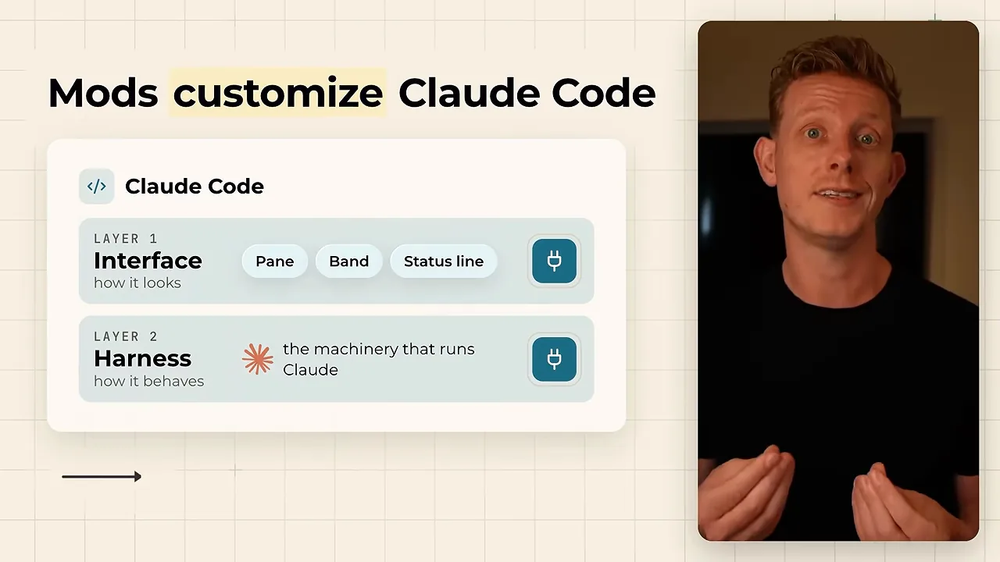
발표자는 이 기능을 아직 Claude Cowork에서 주로 일하는 사람이 Claude Code 탭으로 옮겨 올 이유라고까지 말해요.
신호를 듣고, 지켜보거나 바꾸거나 막아요
원리는 한 장으로 정리돼요. Claude Code는 무슨 일이 생길 때마다 신호를 보내요. 왼쪽 네 줄이 그 예예요. 프롬프트를 보냈을 때(Prompt sent), 도구를 쓰기 직전(Tool about to run), 서브 에이전트가 시작될 때(Subagent started), 답변이 끝났을 때(Reply finished)예요. 가운데 Mod가 그중 하나를 듣다가 오른쪽 세 갈래 중 하나를 해요. 지켜보기(Watch), 바꾸기(Change), 막기(Block)예요.
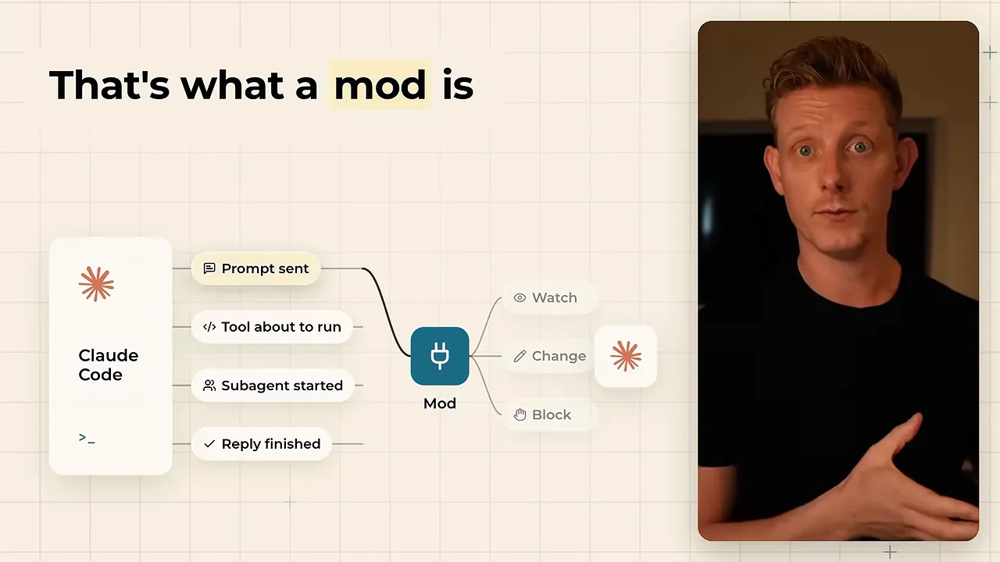
첫 번째 모드 Brain Dump
발표자가 처음 만든 모드예요. 음성으로 길게 쏟아내는 브레인 덤프는 편하지만 지저분해요. 받아쓰기 오류가 섞이고, 이야기가 이리저리 튀고, 가끔 앞뒤 말이 서로 어긋나요. Brain Dump는 프롬프트 전송 신호를 듣다가, 방금 보낸 게 긴 브레인 덤프면 막아요. 아래 화면 가운데 'A hook blocked your prompt' 알림이 그 순간이에요. 404단어짜리 프롬프트가 Claude에게 가기 전에 멈췄어요.
그다음 다른 AI 모델이 뒤에서 확인 질문을 던져요. 화면 아래쪽 'Two asks clash. Which one wins?'는 "영상은 12분 안으로"와 "기능을 하나도 빼지 말고"가 부딪친다고 짚는 질문이에요. 고를 수 있는 답이 세 줄 붙어 있어요.
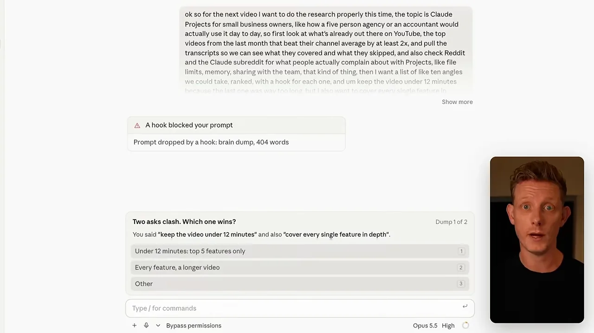
답을 받으면 모드가 프롬프트를 Anthropic의 프롬프트 작성 틀에 맞춰 다시 써요. 노란 제목 네 개가 그 틀이에요. 'THE JOB'(할 일), 'THE WHY'(이유), 'THE GUARDRAILS'(지켜야 할 선), 'DONE MEANS'(끝났다고 볼 기준)예요. 앞에서 고른 답이 'GUARDRAILS' 칸의 '12분 이하, 상위 5개 기능만'으로 들어갔어요. Claude는 지저분한 원문 대신 이 정리본만 받아요.
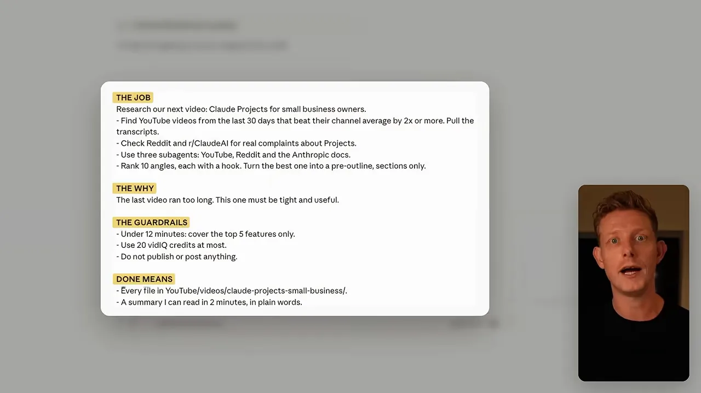
말로 만들고, 두 종류로 나뉘어요
모드를 만들 때 코드를 직접 쓸 필요는 없어요. 발표자는 "내 긴 음성 브레인 덤프를 잡아서 확인 질문 몇 개를 하고, 내 프롬프트 틀로 다시 써 주는 모드를 만들어 줘" 정도로 말했대요. 그러면 Claude가 내장 스킬 plugin-authoring으로 모드를 만들어요. 마음에 안 드는 점은 스킬을 고칠 때처럼 말로 바꿔 달라고 하면 돼요.
모드는 두 종류로 나뉘어요. 왼쪽 노란 카드 'Uses AI'는 Brain Dump처럼 질문을 하고 프롬프트를 다시 쓰는 모드예요. 보통 메시지처럼 플랜 사용량을 써요. 오른쪽 초록 카드 'Free to run'은 일어난 일을 기록하거나 화면에 보여 주기만 하는 모드라 비용이 들지 않아요.
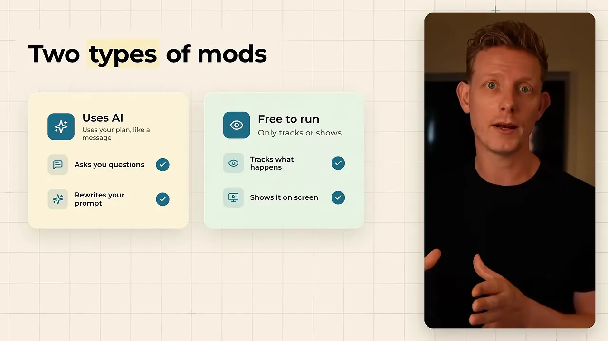
Helper Desk: 서브 에이전트가 하는 일을 보여 줘요
Opus 5.5 같은 최신 모델은 서브 에이전트를 많이 띄워요. 발표자가 새 영상 아이디어를 부탁하면 Claude가 조사용 서브 에이전트를 여럿 띄워요. 여러 갈래를 동시에 보니 빠르고 메인 대화도 깔끔해져요. 대신 에이전트 하나하나가 무엇을 하는지, 얼마를 쓰는지, 어디까지 왔는지 볼 방법이 없어요. 5분이 더 걸릴지 15분이 더 걸릴지 모른 채 기다리게 돼요.
Helper Desk는 이걸 두 군데에 보여 줘요. 먼저 프롬프트 입력창 바로 위에 보라색 작업 막대가 생겨요. 아래 화면은 'Video prep: Claude Projects' 작업에서 할 일 5개 중 2개가 끝나 40%까지 찼고, 지금 단계가 'Write the pre-outline'이라고 알려 줘요.
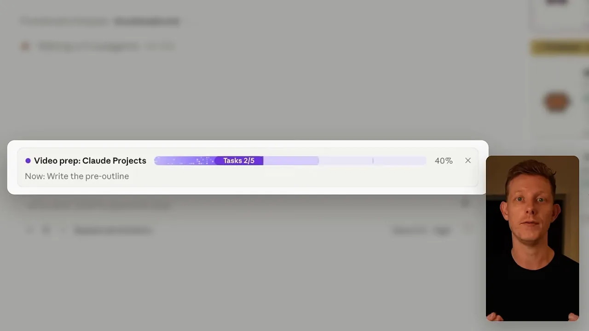
다음은 옆 패널이에요. 서브 에이전트마다 색이 다른 작은 Claude 게 캐릭터가 붙고, 각자 진행 막대와 토큰 사용량이 보여요. 위쪽 초록 띠 'Running'에 Thumbnails, Pre-outline, Motion graphics, Script 네 개가 돌고 있고, 아래 노란 띠 'Finished'에 Research가 끝나 있어요. 맨 위에는 대화 전체 비용과 서브 에이전트 토큰 합계가 있어요.
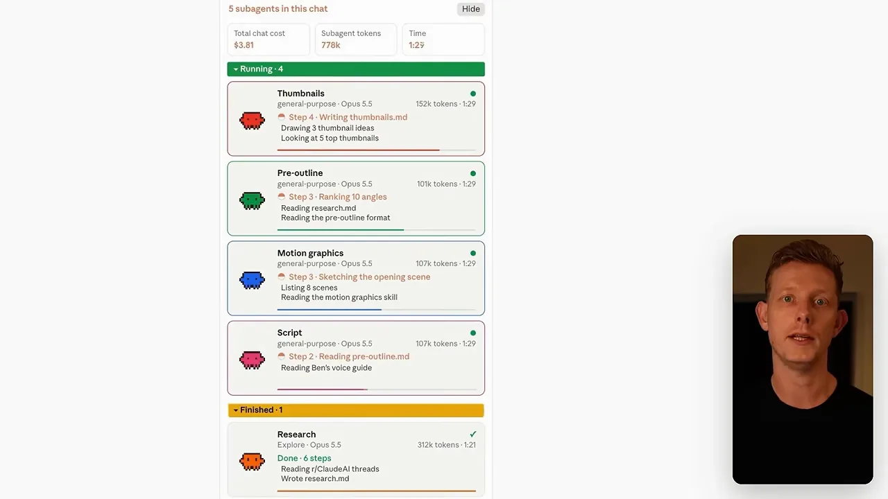
이 모드는 서브 에이전트가 시작되거나 할 일이 체크될 때를 지켜보고, 막대와 패널을 그려 Claude Code가 보여 주는 화면만 바꿔요. AI를 부르지 않으니 비용이 없어요. 모드라서 모양도 말로 바꿀 수 있어요. 예를 들면 "에이전트마다 역할에 맞는 이름을 붙여 줘"처럼요. 발표자는 Johnny Savvy의 Progress 모드에서 영감을 받아 자기 작업 방식에 맞게 다시 만들었다고 밝혀요.
Cache Clock과 Handoff: 긴 대화의 비용과 품질 지키기
발표자가 둘을 짝으로 소개해요. Cache Clock은 오래된 대화가 비싸지는 순간을, Handoff는 대화가 너무 길어져 답이 나빠지는 순간을 잡아요.
Cache Clock: 대화가 식기 전에 알려 줘요
오래 붙잡고 있는 대화에 점심 뒤나 다음 날 아침 다시 돌아오면, 생각보다 훨씬 비쌀 수 있어요. 이유는 프롬프트 캐시예요. Claude는 메시지를 보낼 때마다 대화 전체를 다시 읽어요. 이걸 싸게 하려고 Anthropic은 답변이 끝날 때마다 대화 사본을 자기 서버에 저장해 둬요. 이걸 캐시, 또는 대화를 따뜻하게 유지한다고 불러요.
아래 슬라이드 위쪽은 Claude가 서버에 저장된 'Northvale proposal' 사본을 읽는 모습이에요. 아래쪽 동전 줄이 정가이고, 오른쪽 노란 표시가 'Opus 5.5 · 1/20 of the price'예요. 따뜻한 대화를 읽는 값은 정가의 20분의 1이에요.
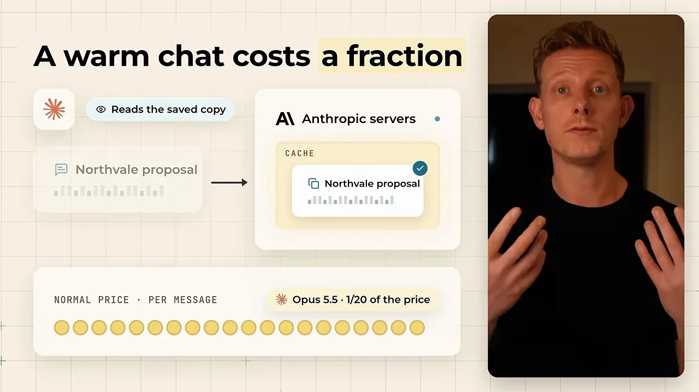
문제는 사본이 정해진 시간만 산다는 거예요. 타이머가 끝나면 캐시가 식어요. 사본이 사라지니 Claude는 대화 전체를 정가로 다시 읽고 다시 저장해야 해요. 아래 슬라이드의 왼쪽 Warm 칸은 얇은 동전 한 장, 오른쪽 Cold 칸은 높이 쌓인 동전 더미예요. 긴 대화에서는 같은 메시지가 최대 40배까지 비싸져요.
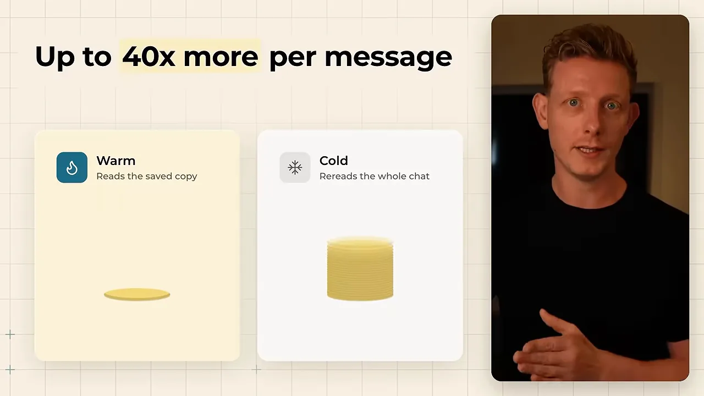
발표자가 든 숫자와 타이머 길이를 한 그림에 옮겼어요. 위쪽 두 막대는 같은 축척이라, 4센트 막대가 거의 보이지 않는 게 40배 차이예요. 아래쪽은 캐시가 사는 시간이에요. Claude 구독은 1시간, API(Application Programming Interface) 키는 5분이에요.
Cache Clock은 답변 완료 신호를 듣고, 대화가 식을 때까지 남은 시간을 카운트다운으로 보여 줘요. 시간은 Anthropic 응답에 담긴 타이머를 그대로 쓰니 추측이 아니에요. 나중에 돌아올 대화면 Keep warm을 누르거나 /keep warm을 입력해요. 그러면 식기 직전에 작은 숨은 메시지를 보내 대화 전체를 다시 데우고, 타이머가 처음부터 다시 돌아요.
아래 화면 맨 아래 띠가 그 모습이에요. 'Cache warm 0:45'로 남은 시간이 거의 끝났고, 그 밑 파란 글씨 'Keeping warm · sending ping 1'이 데우기 메시지를 보내는 중이라는 표시예요. 오른쪽 'Stop keeping warm' 버튼으로 멈출 수 있어요.
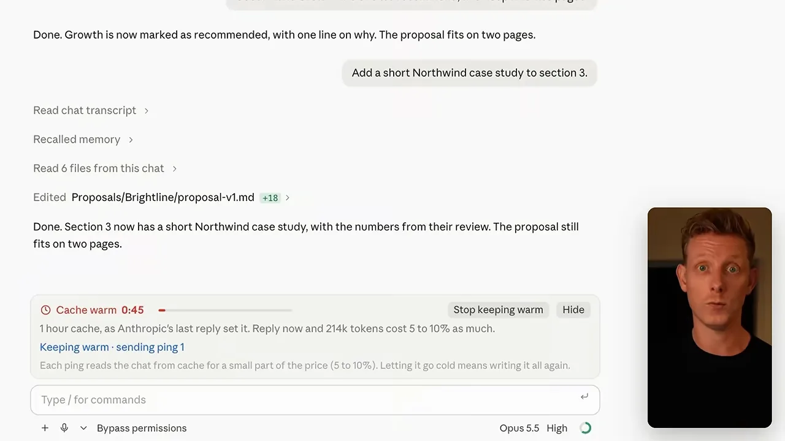
발표자는 Karan Bansal의 Cache Tax 모드에서 영감을 받았다고 밝혀요.
Handoff: 새 대화로 옮겨 탈 때를 잡아 줘요
발표자가 직접 만든 모드예요. 큰 프로젝트를 Claude와 하다 보면 대화가 아주 길어지고, 길어질수록 답이 나빠져요. Claude가 한 대화에서 붙잡을 수 있는 양, 즉 컨텍스트 윈도우가 정해져 있기 때문이에요. 아래 슬라이드 오른쪽 'Context used 92%' 막대처럼 꽉 찰수록 세부를 놓치고 뒤섞기 시작해요. 이걸 컨텍스트 로트라고 불러요.
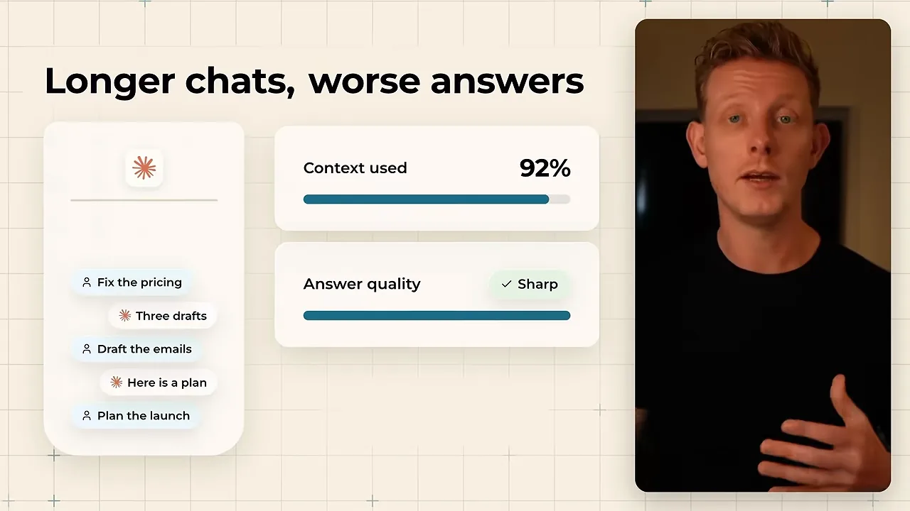
Claude도 대책이 있어요. 오래된 부분을 요약해 공간을 비우는 컴팩션이에요. 하지만 아래 슬라이드 가운데 'LOST IN THE SUMMARY' 칸처럼 요약은 늘 세부를 잃어요. 오른쪽 'Answer quality' 막대는 'Worse'로 내려가 있어요. 여기에 캐시까지 식었다면 메시지마다 훨씬 비싸져요.
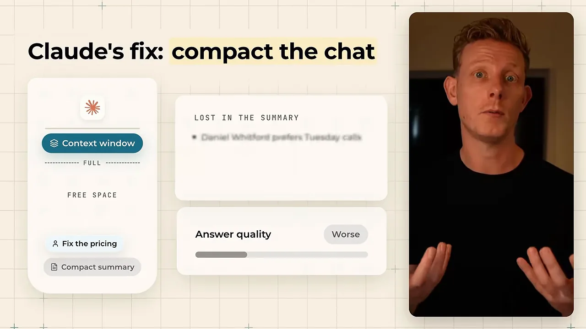
그래서 언젠가는 쌓은 맥락을 잃지 않고 새 대화를 열어야 하는데, 언제 열지 판단하기가 어려워요. Handoff는 세 순간에 움직여요. 아래 슬라이드 맨 위의 '250,000 tokens, PERFORMANCE CUTOFF' 막대가 첫째예요. 발표자가 Claude 성능이 조금씩 떨어지기 시작한다고 보는 선이에요. 둘째는 Cache Clock이 캐시가 식은 걸 볼 때(Reply finished 신호), 셋째는 직접 /handoff를 입력할 때예요. 오른쪽 위 'Uses AI' 표시처럼 이 모드는 AI를 써요.
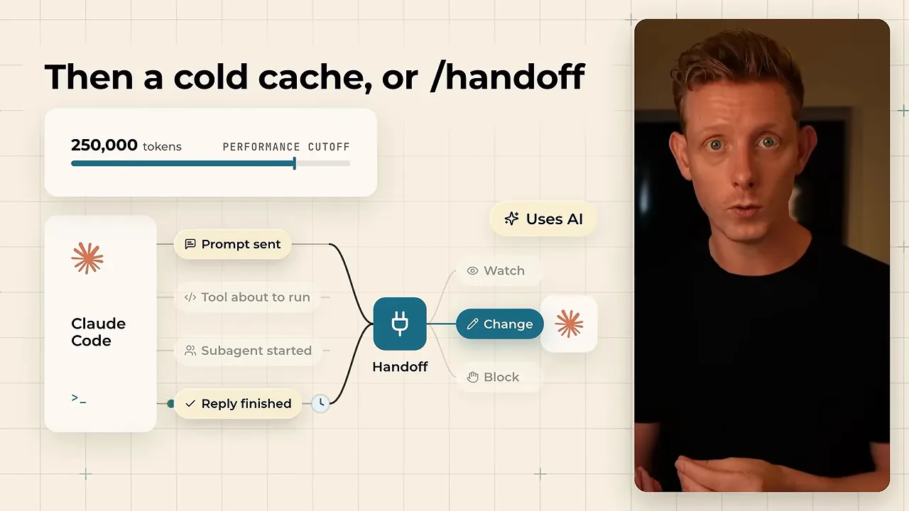
움직이면 대화 전체와, 대화에서 쓰거나 만든 파일, 스킬, 도구, 링크를 모두 읽어요. 그리고 컴팩션 요약보다 훨씬 자세한 인계 프롬프트를 써요. 아래 'Handoff ready: 912 words' 창의 다섯 단계가 그 과정이에요. 대화 읽기(186개 메시지), 파일 찾기(14개), 스킬·도구·링크 정리, 인계문 쓰기, 저장과 점검 순서예요. 아래 버튼 'Start new chat with it'을 누르면 그 프롬프트를 담은 새 대화가 열려요. 새 대화는 어디서 멈췄는지, 무엇이 진행됐는지, 다음에 할 일이 뭔지 그대로 이어받아요.
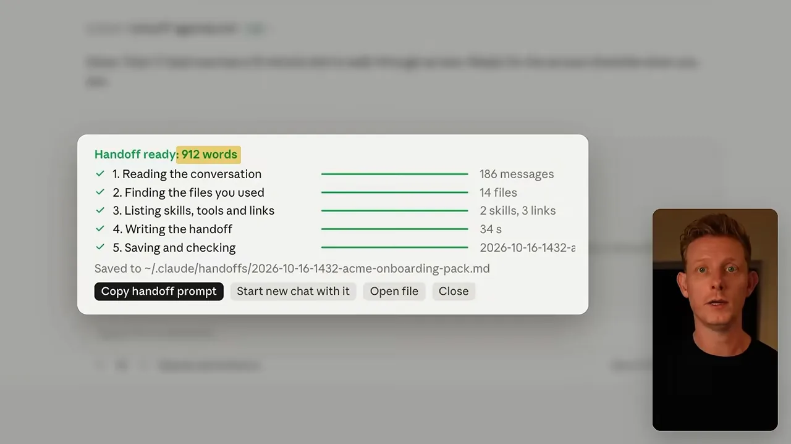
Reflect와 Chat Inventory: 규칙은 남기고, 작업은 기록해요
Reflect: 규칙을 말하면 어디에 남길지 물어요
Claude Code는 기억할 곳이 여럿이에요. 아래 슬라이드처럼 내장 메모리(Built-in memory), CLAUDE.md·AGENTS.md 파일, 세컨드 브레인이 있어요. Claude Code의 오토 메모리는 중요해 보이는 걸 알아서 저장하기도 해요. 문제는 무엇이 남고 무엇이 잊히는지 내가 정하지 못한다는 거예요. 슬라이드 아래 'RULE · Never use em dashes' 카드는 세 곳 어디에도 들어가지 못하고 떠 있어요. 꼭 남았으면 하는 규칙이 저장되지 않는 일이 잦다는 뜻이에요.
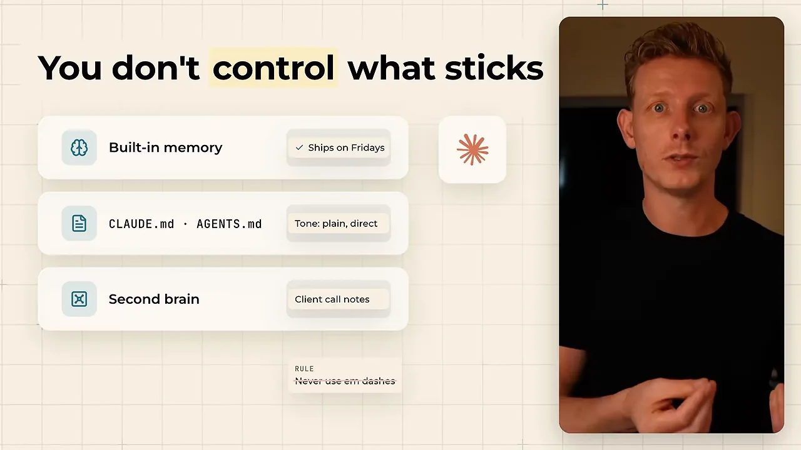
Reflect는 모든 대화에서 보내는 프롬프트를 지켜보다가, 굳은 규칙을 말했는지 확인해요. 영상의 예는 "엠 대시는 쓰지 마"나 "링크드인 첫 줄은 12단어 이하로" 같은 말이에요. 규칙을 찾으면 팝업이 떠요. 아래 화면에서는 뉴스레터 초안을 고치며 "내 뉴스레터에 엠 대시는 절대 쓰지 마. leverage라는 말도 쓰지 마"라고 하자, 'That sounds like a lasting rule. Save it?' 창이 떴어요. 버튼은 세 개예요. 내장 메모리에 저장(Save to memory), 세컨드 브레인 프로필에 저장(Save to my vault profile), 건너뛰기(Skip)예요.
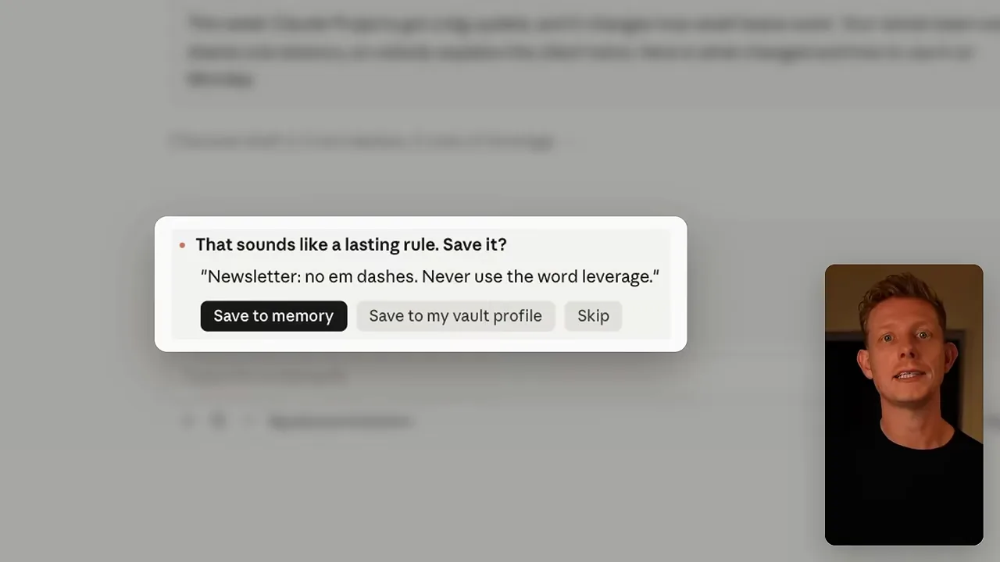
스킬처럼 다른 곳에 저장하고 싶으면, 모드를 그렇게 바꿔 달라고 Claude에게 말하면 돼요. 발표자는 Bayram Annakov의 Claude Reflect 스킬에서 영감을 받았다고 밝혀요.
Chat Inventory: Cowork처럼 작업 내역을 옆에 띄워요
발표자가 Cowork에서 Claude Code로 넘어오게 만든 모드예요. 그동안 많은 일을 Cowork에서 한 이유는 화면 때문이었대요. Cowork에는 할 일 목록, Claude가 쓰는 커넥터와 스킬, 읽고 만드는 파일을 보여 주는 옆 패널이 있어요. Claude Code 탭에는 그게 없어서, 긴 작업일수록 블랙박스처럼 느껴졌다고 해요.
Chat Inventory는 Claude가 대화 중에 쓰는 모든 도구 호출, 커넥터 호출, 스킬을 듣고 'In this chat' 패널에 쌓아요. 아래 화면은 "내일 Brightline 영업 통화 준비해 줘"라는 요청의 결과예요. 맨 위 To-do에 목표 'Prep for the Brightline call'과 할 일 6개 중 5개 완료가 보여요. 그 아래 Connectors에는 Google Calendar 1번, Fireflies 3번, Attio 2번, Gmail 2번 호출이 로고와 함께 있어요. 이어서 Context files에 읽은 파일 네 개, Skills에 /call-prep가 있어요.
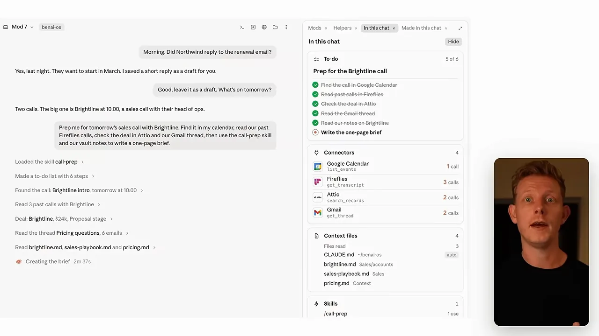
일어난 일을 기록만 하고 AI는 쓰지 않으니 비용이 없어요.
Screen Share Mode와 Replay Theater
Screen Share Mode: 화면 공유 전에 개인 정보를 가려요
Claude 대화가 남의 화면에 뜨는 일은 생각보다 잦아요. 아래 슬라이드 가운데 카드가 내 Claude Code 대화이고, 점선으로 이어진 곳이 그 대화가 보이는 자리예요. 팀 회의, 영업 통화, 교육, 영상, 소셜 게시물이에요. 카드 안에는 고객 이름과 회사, 거래 금액이 그대로 있고, 아래 '4 watching'은 지금 네 명이 보고 있다는 표시예요.
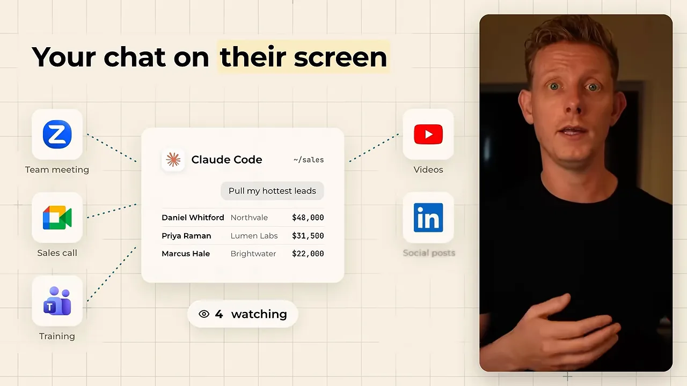
화면을 공유하기 전에 /screen-share를 입력하면, 이 모드가 Claude Code의 화면 표시를 바꿔요. 이름, 이메일, 전화번호, 금액이 모두 회색 막대가 돼요. 아래 두 장이 켜기 전과 후예요. 첫 장은 리드 표의 이름과 이메일이 그대로 보이는 모습이에요.
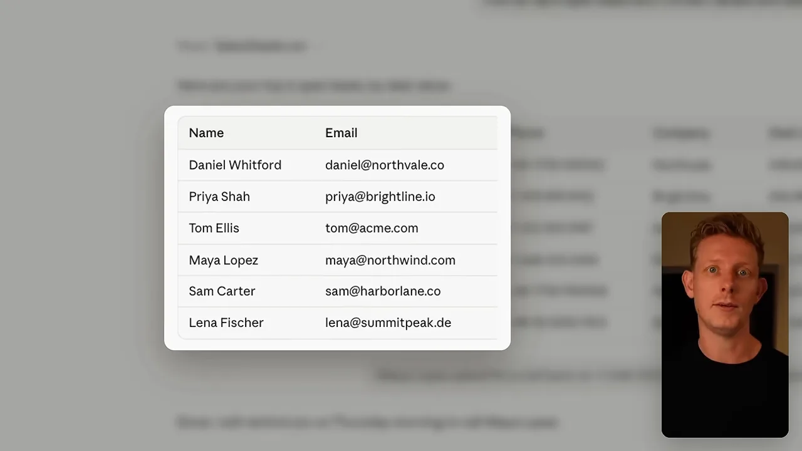
모드를 켠 뒤에는 같은 표의 이름, 이메일, 전화번호, 거래 금액 칸이 모두 회색 막대로 바뀌어요. 회사 이름 열만 남아요. 맨 아래 띠에는 'Screen-share mode: emails, phones, amounts and names hidden on screen'이 떠서 지금 켜져 있다는 걸 알려 줘요.
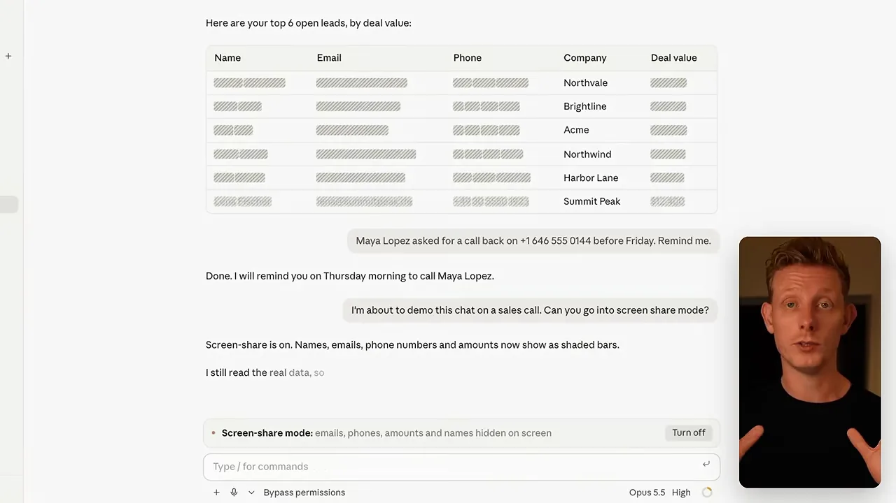
발표자는 영상용으로 대화를 녹화할 때마다 가짜 고객 이름을 지어내야 했는데, 이제는 이 모드를 켜고 실제 대화를 그대로 쓴다고 해요.
Replay Theater: Claude가 고친 곳을 하나씩 다시 보여 줘요
이 모드는 Anthropic이 직접 내놓았어요. 글이나 디자인 작업에서는 초안 하나가 수십 번 고쳐져요. 예를 들어 뉴스레터 초안을 다듬어 달라고 하면 Claude가 한 번에 열 군데 넘게 고치는데, 무엇을 잡고 무엇을 다시 썼는지 알 수 없어요. 지금까지는 버전을 직접 비교하거나 Claude에게 바뀐 점을 나열해 달라고 하는 수밖에 없었어요.
Replay Theater는 Claude가 파일에 한 수정을 모두 기록해요. 답변이 끝난 뒤 /replay를 입력하면 수정을 하나씩 차례로 재생해요. 아래 패널은 4단계 중 2단계예요. 파일 경로 newsletter-draft.md 아래에 빨간 줄 두 개가 지워지고 초록 줄 하나가 들어온 게 보여요. Prev, Next 버튼(키보드 P, N)으로 앞뒤 단계를 오가요.
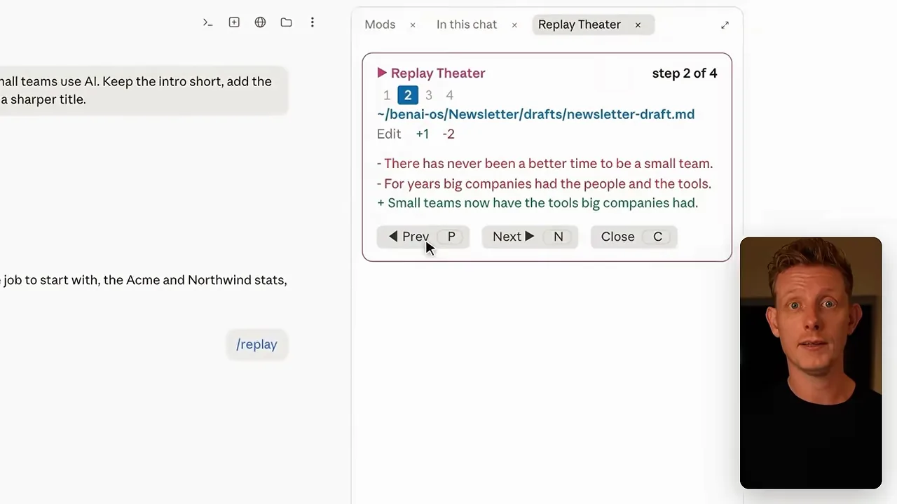
단, 파일에만 통해요. 아래 슬라이드처럼 초안이 newsletter-draft.md 같은 문서여야 해요('Works on files'). 대화창에 쓴 글은 기록되지 않아요('Not chat text').
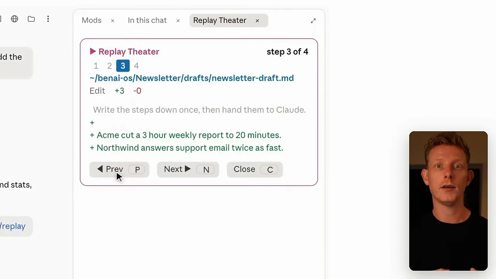
Switchboard: 켜 둔 모드를 한곳에서 관리해요
마지막도 발표자가 직접 만든 모드예요. 모드를 시작하면 만들고, 깔고, 시험하다가 금세 많아져요. 스킬 때 많은 사람이 겪은 일이 똑같이 벌어져요. 수백 개를 깔아 놓고 어떤 게 계정에 켜져 있는지, 어떤 걸 실제로 쓰는지 모르게 되는 거예요. 아래 슬라이드 왼쪽 'Installed 200+' 목록과 오른쪽 'Actually used' 목록 사이 물음표가 그 상태예요.
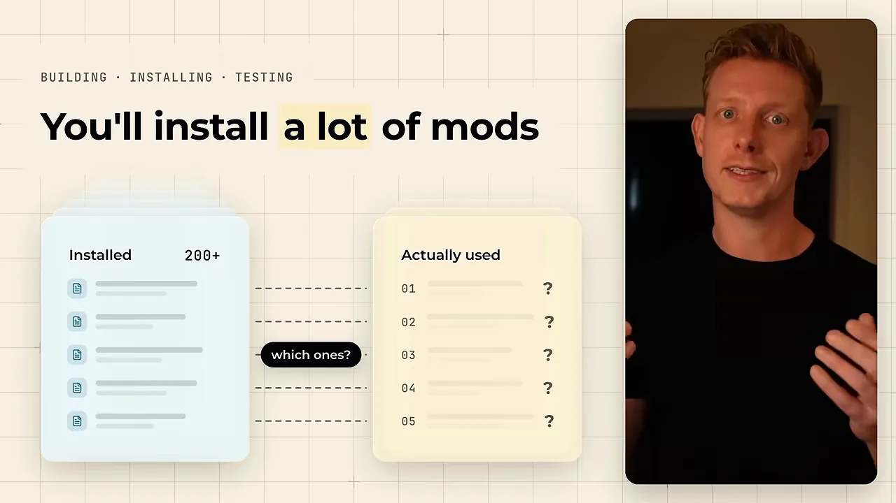
게다가 데스크톱 앱에는 지금 돌아가는 모드를 한눈에 보거나, 대화 중에 하나만 끄는 빠른 방법이 아직 없어요. Switchboard는 명령 하나를 더해요. /mods를 입력하면 지금 돌아가는 모든 모드가 목록으로 떠요. 아래 화면에서 줄마다 오른쪽에 초록 스위치가 있고, 일부 줄에는 눈 모양 아이콘이 따로 있어요. 스위치는 모드를 켜고 끄고, 눈 아이콘은 그 모드가 띄운 패널만 숨겨요. 맨 위 Context Gauge는 스위치가 꺼져 회색이에요.
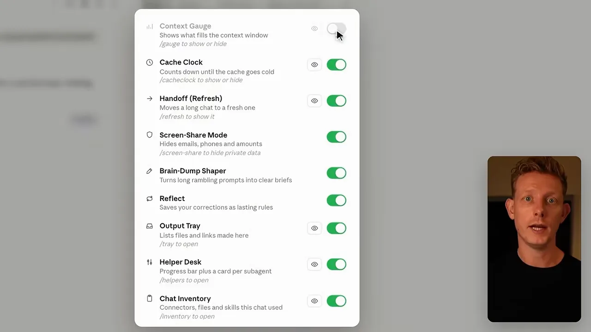
아홉 개를 한 표로 보면
영상에 나온 모드를 첫 장의 신호 그림에 맞춰 정리했어요. 무엇을 듣고 무엇을 하는지, 비용이 드는지는 영상이 말한 것만 적었어요.
| 모드 | 언제 움직이나요 | 무엇을 하나요 | 비용 |
|---|---|---|---|
| Brain Dump | 프롬프트를 보낼 때 | 긴 브레인 덤프를 막고, 확인 질문 뒤 네 칸 틀로 다시 써요 | AI 사용 |
| Helper Desk | 서브 에이전트 시작, 할 일 체크 | 진행 막대와 에이전트별 패널을 그려요 | 없음 |
| Cache Clock | 답변이 끝날 때 | 캐시가 식을 때까지 카운트다운, Keep warm으로 다시 데워요 | 데울 때 한 번에 몇 센트 |
| Handoff | 25만 토큰, 캐시가 식을 때, /handoff | 자세한 인계 프롬프트를 쓰고 새 대화를 열어요 | AI 사용 |
| Reflect | 모든 프롬프트 | 굳은 규칙을 찾아 어디에 저장할지 물어요 | 영상에서 말하지 않음 |
| Chat Inventory | 도구·커넥터 호출, 스킬 사용 | 할 일, 커넥터, 파일, 스킬을 옆 패널에 쌓아요 | 없음 |
| Screen Share Mode | /screen-share | 이름, 이메일, 전화번호, 금액을 회색 막대로 가려요 | 영상에서 말하지 않음 |
| Replay Theater | 파일 수정, /replay | 수정을 한 단계씩 재생하고 이전 버전으로 돌아가요 | 영상에서 말하지 않음 |
| Switchboard | /mods | 돌아가는 모드를 켜고 끄고, 패널을 숨겨요 | 영상에서 말하지 않음 |
발표자는 아홉 개를 모두 압축 파일 하나로 나눠 줘요. Claude 대화에 그 파일을 넣고 "이 모드들 설치해 줘"라고 하면 Claude가 계정에 추가해 준대요.